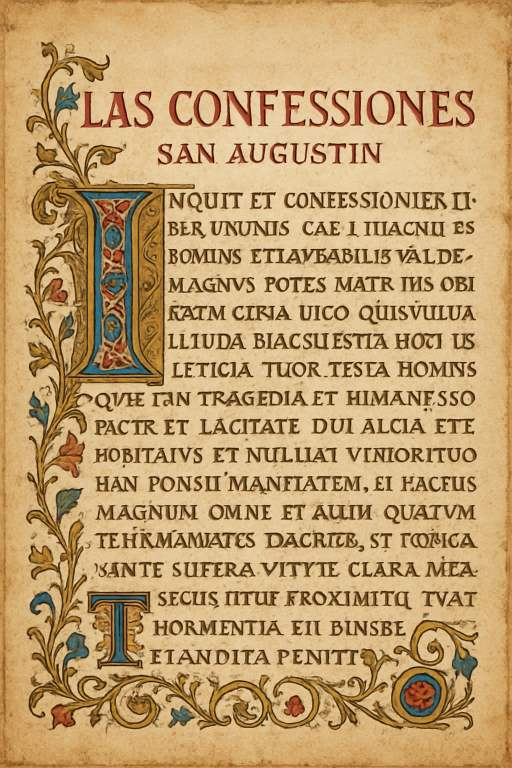

El Viaje del Alma hacia la Verdad Divina
Las "Confesiones" no son solo una autobiografía espiritual, sino una profunda meditación filosófica y teológica. En esta obra cumbre, San Agustín narra su tumultuoso camino hacia la fe cristiana, explorando temas como el pecado, el libre albedrío, la memoria, el tiempo y la búsqueda incansable de Dios. Es un testimonio sincero de su conversión y un diálogo íntimo con la divinidad.
Agustín reflexiona sobre sus primeros años, su educación, el desarrollo de su ego y la "iniquidad" inherente a la naturaleza humana desde el nacimiento. Aborda sus travesuras infantiles y su vida licenciosa como joven estudiante en Cartago, incluyendo el famoso episodio del robo de peras. Empieza a reconocer su propia tendencia al pecado y la búsqueda de placeres vanos.
"¡Oh eterna Verdad, Verdadera Caridad, Amada Eternidad!"
Describe su década de adhesión al Maniqueísmo, una secta que prometía una explicación racional del universo y el problema del mal. Explora sus profundas amistades, la pérdida de un amigo cercano que le causa un dolor inmenso, y cómo este suceso le lleva a cuestionar la fragilidad de las cosas terrenales y a buscar una amistad más duradera en Dios.
"Tarde te amé, belleza tan antigua y tan nueva, tarde te amé."
Esta es la parte central de su relato personal. Narra su llegada a Milán, su encuentro con el obispo Ambrosio, y su progresivo desencanto con el Maniqueísmo. Describe su intensa lucha interna entre sus deseos carnales y el anhelo de verdad, culminando en la famosa escena del jardín donde escucha "Tolle, lege" y se convierte al cristianismo.
"¡Toma y lee! ¡Toma y lee!"
Agustín se sumerge en una profunda indagación filosófica sobre la naturaleza de la memoria, un vasto palacio donde residen todas nuestras experiencias y conocimientos. Seguidamente, aborda la enigmática cuestión del tiempo, concluyendo que es una "distensión del alma" más que una realidad objetiva, y que solo en Dios reside la verdadera eternidad.
"¿Qué es, pues, el tiempo? Si nadie me lo pregunta, lo sé; si quiero explicárselo al que me lo pregunta, no lo sé."
Los últimos libros se alejan del relato personal para centrarse en la exégesis del Génesis y la teología. Agustín reflexiona sobre el significado de la creación del mundo por Dios y profundiza en el misterio de la Santísima Trinidad, viéndola reflejada en la mente humana (ser, conocer, amar) y en la estructura misma de la realidad.
"Grande eres, Señor, y digno de toda alabanza; grande es tu poder y tu sabiduría no tiene medida."
Inspirado por el estilo confesional y devocional de San Agustín, utiliza la IA para generar una oración única. Haz clic en el botón para crear una plegaria que refleje los temas de la búsqueda, el arrepentimiento y la alabanza.